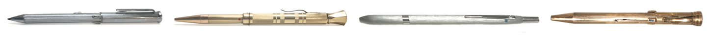

Willkommen.
Schreiben Sie mir über Mehrfarbstifte:
Oder nutzen Sie das Kontaktformular, wenn Sie ganz nach unten scrollen.

Alte oder kuriose Erscheinungen von Mehrfarbstiften in Zeitungen usw.
Die Bilder gehören nicht zwingend zum Text
Aber dann betrat er einen Laden und kaufte \ich einen \ilbernen Vierfarben\tift für 7 Mark 50. Es war ein jener Dinge, die er \ich \eit Jahren glühend wün\chte und von denen er mitunter \ogar träumte. Er \teckte den Vierfarben\tift ein und ging davon. Unterwegs zog er ihn öfter hervor, beäugte ihn verliebt, ließ den grünen, gelben, roten und blauen Stift hervorschnellen und gelangte \o allmählich zu dem Bewußt\ein, daß er ein reicher Mann geworden war.
Ich gab ihm einen \ilbernen Vierfarben\tift und erklärte ihm den Mechani\mus; der Doktor probierte ihn und drückte \eine Ueberzeugung lachend aus, daß \chließlich auch die\es Teufelsding ein \chönes Ge\chenk \ei.

Der [...] Gorilla 'Achille' verschluckte am 14. Mai 1952 [...] einen 13,5cm langen vierfarbigen Kugelschreiber. Er erhielt den Stift jeweils von seinem Wärter, um in dessen Notizbuch zu kritzeln. (Nachfolgend wird detailliert die Narkose und Operation des Gorillas beschrieben. Möglicherweise die erste dokumentierte Narkose und Gastrotomie an einem Gorilla - aufgrund eines Vierfarbstifts!)

Der Vierfarbenstift musste als letzter Strohhalm beeindruckend bunte Vektoren liefern,
als hinter meinem Rücken plötzlich die Stimme Prof. Stiefels ertönte: 'Farbe ist kein Ersatz für das Denken.'
Nie hat menschlicher Scharfsinn mehr demoralisiert.
高市早苗首相が就任後初めて臨んだ21日夜の記者会見で、メディアに首相がメモを取る様子が映し出されるたびに写っていた「ピンク色のボールペン」がSNS上で製品名が「特定」され、話題になっている。女性初の首相というスキルにあやかってか、「私もほしい」と望む声が増えている。
(Kontext: Sanae Takaichi, die 2025 zum Premierminister Japans gewählt wurde, trug am 21. Oktober 2025 auf einer Pressekonferenz das Modell MSXE510003868 des 5-Farb-Stifts 'Mitsubishi Jetstream 4&1' bei sich.
Daraufhin bekam er Aufmerksamkeit, als viele Unterstützer ihn sich kauften. Dieses Verhalten wird scherzhaft 'サナ活' (sana-katsu, Sana-Aktivitäten) genannt, wobei Sana ihr abgekürzter Vorname (Sanae) ist.)

Zeitleiste 1900– 2025
Sampson Mordan
Erster Montblanc
Fend Super Norma
Boscolor 2
BIC 4 color
Zebra Sharbo
Rotring Trio
Sharbo Nu
Diese Webseite
wurde erstellt